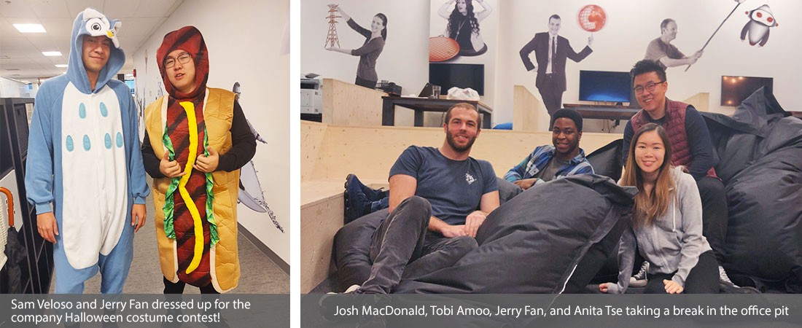
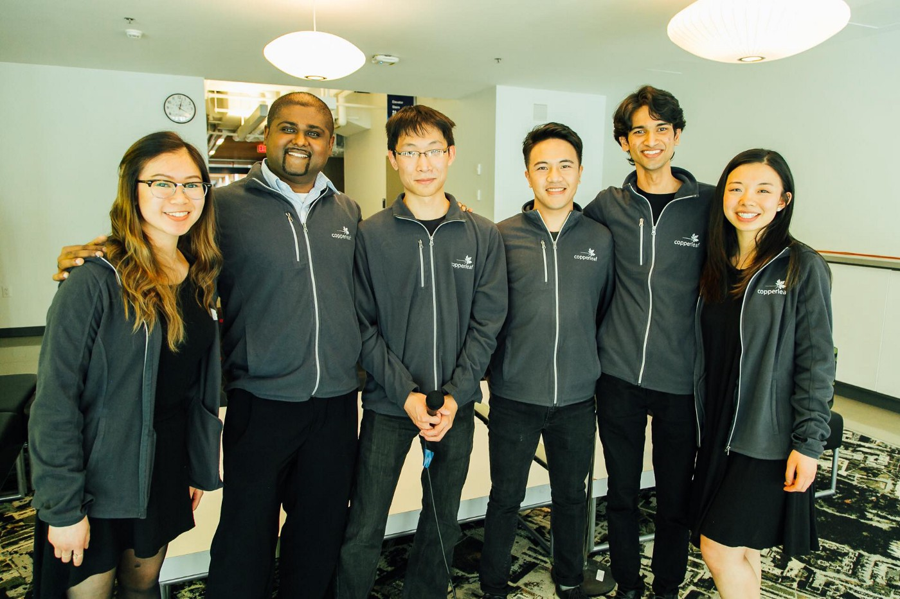

Vancouver, BC
In January 2018, I started my first technical internship as a DevOps Engineer Co-op at Copperleaf Technologies in Vancouver, BC.
During my 8 month co-op term, I used AWS, Docker Compose, Ansible, Terraform, Jenkins, and Vault to architect and implement a Consul configuration system used by devs across the company.
A detailed case study of my Consul project can be found here.
Aside from the project, I worked on numerous projects which gave me knowledge in a wide variety of DevOps tools such as Sumo Logic, Sensu, Artifactory, and Packer.
After my co-op term, I was invited to return as a part-time DevOps Engineer while I continued my full-time studies at the University of British Columbia. During my 5 months as a part time DevOps Engineer, I used Docker to containerize existing Jenkins jobs used to deploy and launch new production servers. I also implemented and tested the automation of new features in Ansible playbooks.
Copperleaf co-ops blog feature
What was unique about my experience at Copperleaf was that I came into this position with no prior knowledge in DevOps. There wasn't a single course at UBC that could have prepared me for this co-op, and this experience opened my eyes to an entire new domain of technology.
I found that the best way to learn DevOps is to build things hands-on. One of my first assignments was to go through the entire
Docker Book
, following each tutorial and really observing what was going on underneath the hood. I then spent my free time building my own Docker Images, constructing my own AWS architecture, and the like, to see what they would do.
This experience sparked my interest in DevOps and cloud computing, and I have since went on to complete my
AWS Associate Solutions Architect certification
and lead a
workshop on deploying web applications with AWS Elastic Beanstalk
to 100+ students at the UBC.
AWS Workshop at UBC Learn Day
Outside of work hours, I co-founded the company's first a cappella group , which rehearsed weekly and hosted two performances in front of the company. Furthermore, our CEO invited us to reprise our performance for clients at the company's annual summit: 2018 Copperleaf AIPM Summit , which was later covered in the Company blog's employee feature that summer!
The Copperleaf Algorhythms
I was also given opportunities to attend DevOps Days 2018, AWSome Day 2018, and The Linux Foundation's Open Source Summit 2018 in Vancouver, BC.